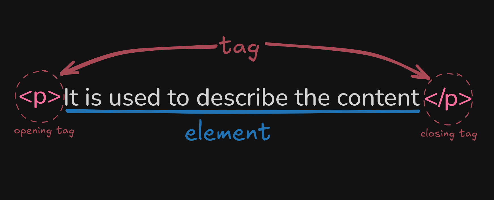

It is used to describe the content
SEMANTIC TAGS - PARAGRAPHS: linear elements
La primera regla del Club de la Lucha es: Nadie habla sobre el Club de la Lucha. Tyler Durden en El Club de la Luchawbr: aaaaaaaaaaaaaaaaaaaaaaaaaaaawbr
line breaks br
br line breaks
"hr"cambio de seccion, de capitulo, rompe la secuencia
function mensaje(str) {
console.log(str);
}
LISTS
FIGURE & FIGCAPTION
ARTICLE
MARKERS
links to external pages or to the same page
Subfolder
links that opens in another tab
Ir al capitulo 2 de la pagina marcadores